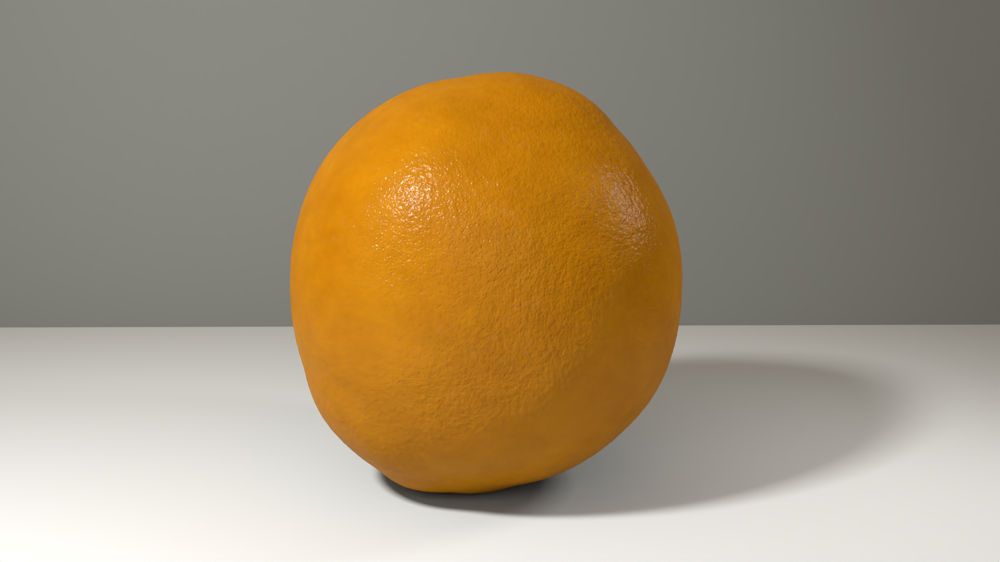
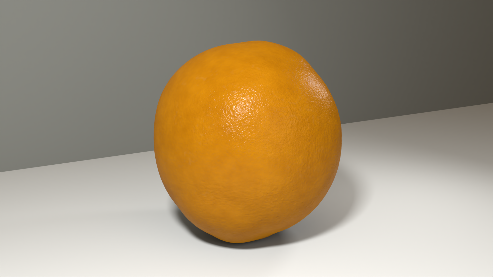
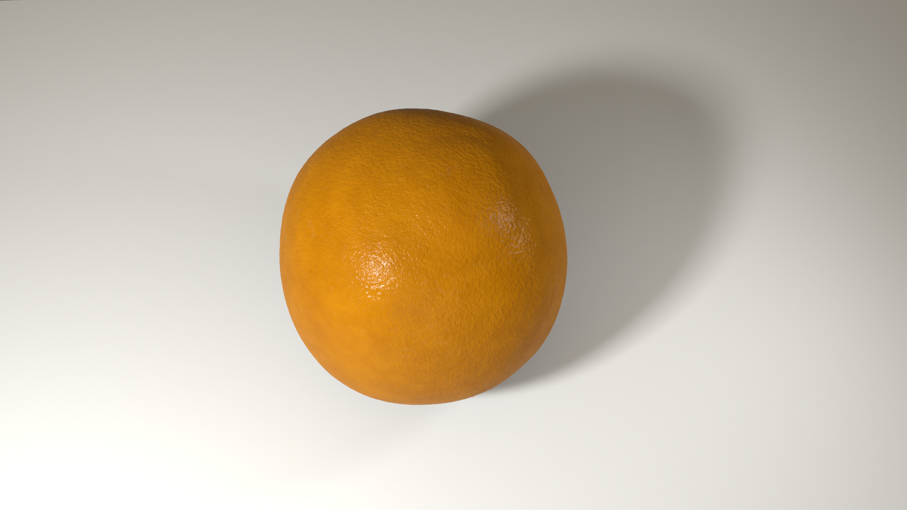
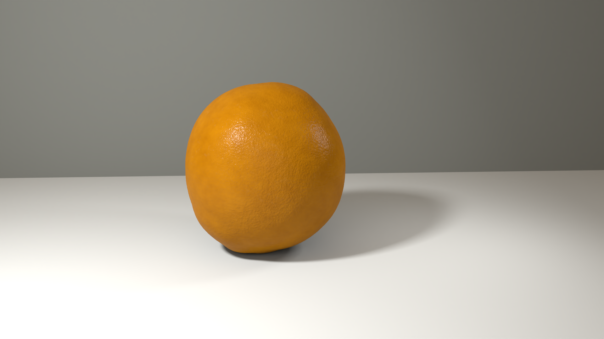

From pores to displacement
Early tests with disks and small spheres read as freckles, bumps or spikes. Replacing them with inward, bowl-like mesh displacement made the pores part of the peel itself.
06 / LIGHTING & RENDERING
A physically based rendering study of an orange, built through Python-generated RIB.
Individual academic project · MSc Computer Animation & Visual Effects

/ OVERVIEW
I studied reference photographs of a real orange, then built the fruit procedurally using Python and RenderMan. The goal was to recreate its asymmetric silhouette, recessed pores and waxy highlights without a pre-made fruit model or bitmap peel texture.
The scene generates four camera views: close-up, wide, top and side texture. Together they show how geometry, surface detail and light contribute to the result from different angles.
Early tests with disks and small spheres read as freckles, bumps or spikes. Replacing them with inward, bowl-like mesh displacement made the pores part of the peel itself.
I tuned PxrSurface diffuse colour, specular response and roughness together. The displaced rind breaks up highlights, helping the surface avoid a uniformly dry or overly polished appearance.
Stronger displacement reveals the pores but can produce a cratered surface or visible bands. Softer detail can disappear under frontal lighting. The final settings balance those competing effects across four views.

Angled light reveals the rind relief and the way highlights break across the pores.

The irregular crown and silhouette, viewed from above.

A minimal setting keeps the focus on the fruit, its material and the contact shadow.
Individual project by Joshua Medina.
Developed for the Simulation and Rendering unit at Bournemouth University. NCCA RenderMan lectures and examples provided learning and reference context; the mesh displacement, pore tuning, material, lighting and camera arrangement were developed for this project.
Technical details are drawn from the project report. The images shown here are the refined full-resolution 1920 × 1080 renders supplied separately.